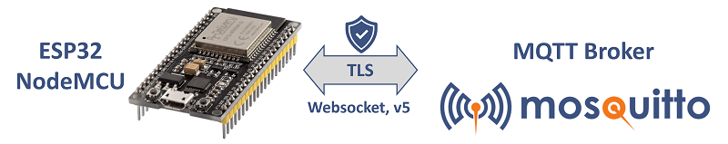

ESP32 MQTT Node

Use this web site to flash your ESP device.
You need to connect your ESP device via USB cable to the Computer showing this web site.
Version: #{VERSION}#, Firmware for demonstration purpose
Build your own firmware rigth in your internet browser

Source code on github